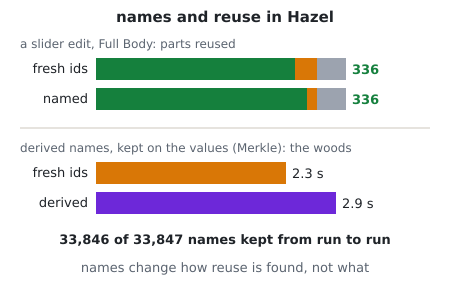
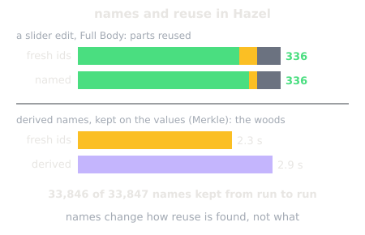
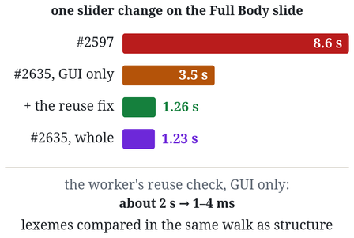
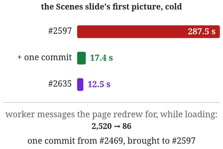
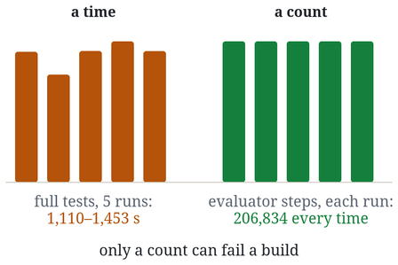
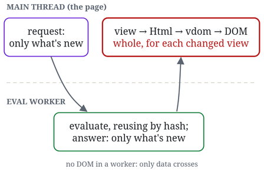
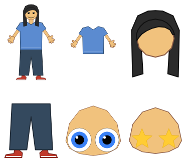

Hazel performance analysis
Notes on making Hazel responsive enough for its livelits to feel like plain apps: what we measured, what we found, what we fixed. Matthew Hammer.
-


Issue 009 · 2026-10-13How do fresh ids relate to lack of reuse? The question of Incremental Computation with Names (OOPSLA 2015), asked of Hazel. The editor names the program's syntax; statics and the evaluator mint gensyms for the rest. Analyzing a slide again renames hundreds of nodes, and naming two sites in statics cuts that by seven eighths. But the reuse check falls back to comparing structure, so the same parts are reused either way: in Hazel today, fresh ids cost time, in the check, in the 461,422 ids one woods evaluation mints, and in what crosses to the worker, not reuse.
-

Issue 008 · 2026-10-12One slider change on the Livelit Playground's Full Body slide, three ways. On #2597, without modular editing, it takes 8.6 s, mostly statics on the whole program. On #2635, with it, 1.2 s. Showing only the slider and the picture should be faster still, but it took 3.5 s: opening them as cells gives the picture new ids on every change, and the worker's reuse check then compared lexemes in a walk that was quadratic over the program's
lets. Comparing them in the same memoized walk as structure, now on #2635, brings it to 1.26 s, as fast as the whole program. -

Issue 007 · 2026-10-12On #2597, the full livelits branch, the Livelit Playground's Scenes slide took about five minutes to draw its first picture. It really does, 287.5 s against 12.5 s on #2635, and the reason is that the page redraws everything for every message from the worker. #2597's worker sends one after every slice of its evaluation: 2,520 while the slide loads, each costing the page about 140 ms, mostly rebuilding the code editor's view of the whole program. The worker sits idle while the page catches up. One commit from #2469, which sends at most one message every 100 ms, brings the first picture to about 17 s on a copy of #2597.
-

Issue 006 · 2026-10-12Issues 001–005 found and fixed performance problems by hand. Nothing in Hazel's CI stops them coming back: no check is required to merge, and the two benchmark workflows never worked on
dev. A time can't fail a build on GitHub's runners, where the same tests vary by about 10% from run to run; a count of the work done can. The first such check counts the evaluator's steps and holds them to budgets, and it fails when reuse breaks. Also: building on an earlier benchmarking PR, or starting fresh, compared in a table. -

Issue 005 · 2026-10-12Hazel evaluates a program in a web worker and draws it on the page's main thread. Each fix so far, sorted by thread, and compared with a more principled idea: the worker diffs each view and sends the page only patches. A worker cannot build real DOM, only data, and Hazel's Html value is already that data. What crosses between the threads already carries only what changed. What is still done whole on every change is the page's: evaluating each changed view, converting it to virtual DOM, and diffing it. Updated the same day: measured in the woods, evaluating the view is about 69% of the page's time, and converting and diffing about 2%. So the next step is a cheaper view.
-
Issue 004 · 2026-10-11
M's witch is now a Livelit Playground slide, with her colors, her nose, her cat and her broom, and her woods and three more of the game's backgrounds are a Scenes slide. A witch redraw takes 5–7.5 s. One in the woods took 10–21 s, even when only the figure moved, against 1–3 ms in the game. Three causes were found and fixed. The eval worker sat idle more than half the time; a recursive helper's name leaking out of its
letstopped anything from being reused; and the view's call memo cost more than it saved. A woods redraw now takes 2.6–6.4 s. Updated 2026-10-12: the picture's view made cheaper, a figure move in the woods redraws in a median of 1.41 s. -
Issue 003 · 2026-10-11
My daughter and son asked for features all afternoon, and each went live in the game as soon as it was ready: claws and star points to 100, longer arms, backgrounds, Daniel Tiger's stripes, a witch, a wolf and a deer. The hands and the mouth have already reached the Hazel slides, where one alien hand with 99 fingers takes 32 s to redraw, against 5 ms in the game.
-

Issue 002 · 2026-10-11With slider releases down to about 0.13 s, the playground slides could carry more. Each feature was tried first in a one-file HTML/JS game, by its players, then formulated in Hazel: hair on the head, a neck, arms with a shirt that is a system of polygons, hands, eyes and a mouth, and two outline modes for building and for playing. What each cost, and why the heaviest slide now spends its time printing points.
-

Issue 001 · 2026-10-10A livelit slider release took 4.6 s in the afternoon of 2026-10-09 and takes about 0.4 s now, against under a millisecond in a plain HTML/JS app. Every performance problem found this fall, its fix, where the remaining 0.4 s goes, and what it would take to get to "immediate".